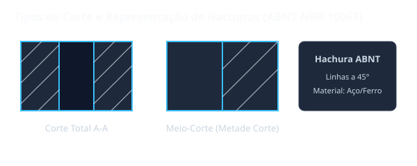

Situação de Aprendizagem 1: Tipos de Corte
1.1 O que é Corte?
O corte é uma convenção gráfica usada para representar a forma interna de uma peça. Consiste em imaginar que a peça foi cortada por um plano e mostrar a vista da superfície de corte.

1.2 Tipos de Corte
| Tipo | Descrição | Representação |
|---|---|---|
| Corte Total | O objeto é cortado por um único plano, revelando toda a forma interna | Linha de corte com setas e letras |
| Meio-Corte | Metade do desenho mostra o corte, a outra metade mostra o exterior | Eixo de simetria como limite |
| Corte Parcial | Usado para revelar detalhes internos em uma pequena área | Linha ondulada de limitação |
| Corte Composto | Usado mais de um plano de corte para revelar formas internas complexas | Várias linhas de corte com setas |
1.3 Representação do Corte
Após o corte, a superfície de corte é identificada por:
- Linha de corte: linha tracejada-grossa
- Setas: indicam a direção da projeção
- Letras: identificam o corte (A-A, B-B, etc.)
- Linhas de projeção: ligam as vistas
1.4 Seção
A seção é a representação apenas da superfície de corte, sem mostrar o que está atrás. É usada quando interessa apenas a forma da secção transversal.